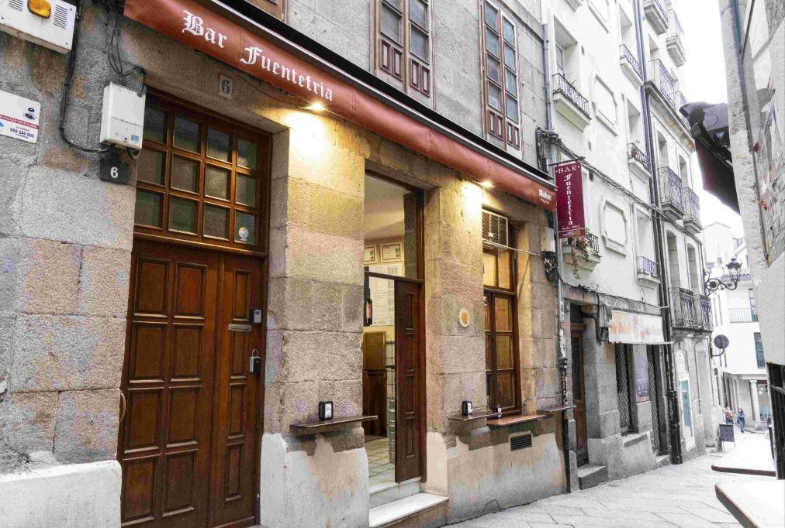
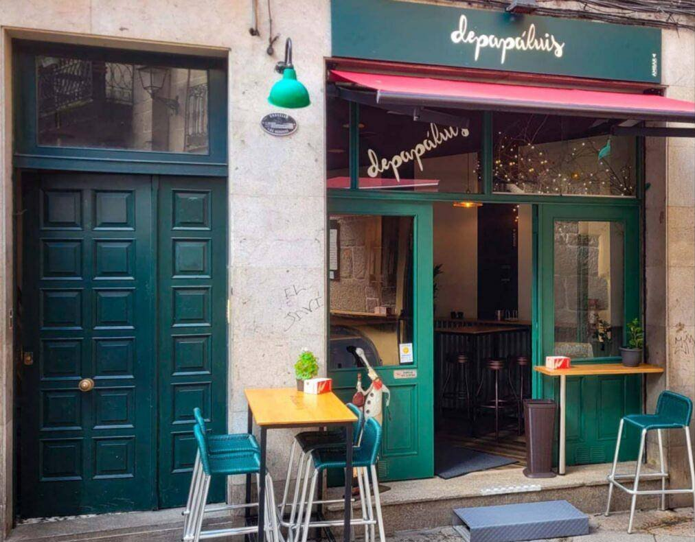
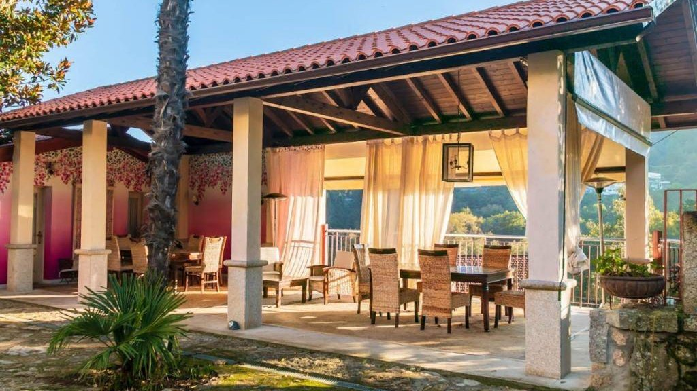

¿Dónde comer?

Restaurantes centro Ourense
Fuentefría, en la Rúa Viriato
Demamáluis, en la Rúa Viriato
A Casita do Pulpo, en la Rúa Viriato


Restaurantes de menú
Restaurante Tizar en Ourense
Restaurante O Muiñeiro en A Valenzá
Restaurante Oira Praia en Ourense


Restaurantes de precio especial
Restaurante Os Caracoles en A Derrasa
Restaurante Plaza en Pereiro de Aguiar
Restaurante del Balneario de Cortegada